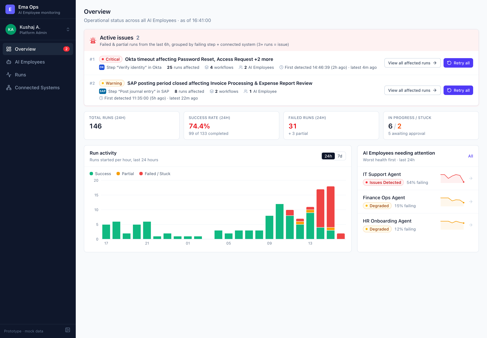
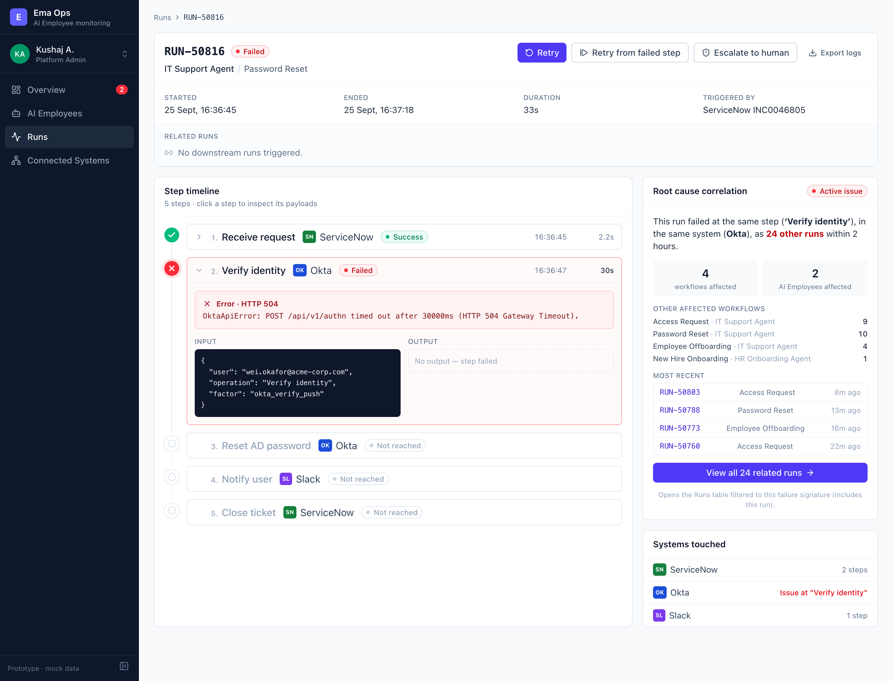
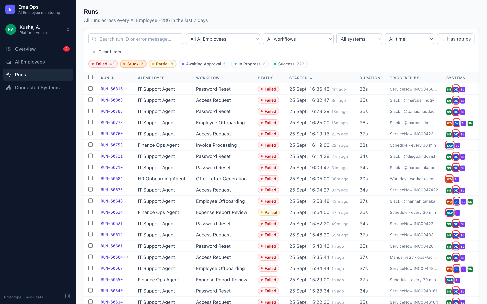

Ema Ops gives an operations team one place to answer “is anything on fire, why, and what else is affected?” for their AI Employees. The Overview opens on a ranked Active Issues panel. It groups recent failed runs by the step and connected system where they broke. Here it shows a critical Okta timeout at “Verify identity”: 25 runs across four workflows and two AI Employees, plus a smaller SAP posting-period warning. Below it are 24-hour stats, a run-activity chart and the agents needing attention. One click on View all affected runs opens the Runs table already filtered to that failure. The table filters by status, agent, workflow, system, date and retries, searches IDs and error text, pages through about 285 runs, and supports bulk retry, escalate and resolve. Opening a run shows its Run Detail: a step-by-step timeline with the failed step expanded to show the error and its payloads, and the trigger and retry chain. A root-cause panel confirms whether the failure is correlated (“24 other runs failed at the same step in Okta”) or isolated. The actions change with the run's status: retry, retry from step and escalate for broken runs; approve and reject for human-in-the-loop steps. It warns before a retry into a system that is still Down, and every action is recorded to the run and the operator's profile activity log. AI Employees shows health for each agent, computed from its 24-hour failure rate (one Issues Detected, two Degraded, one Healthy). Connected Systems shows which dependencies are Down or Degraded and which workflows rely on them.



npm install && npm run dev.